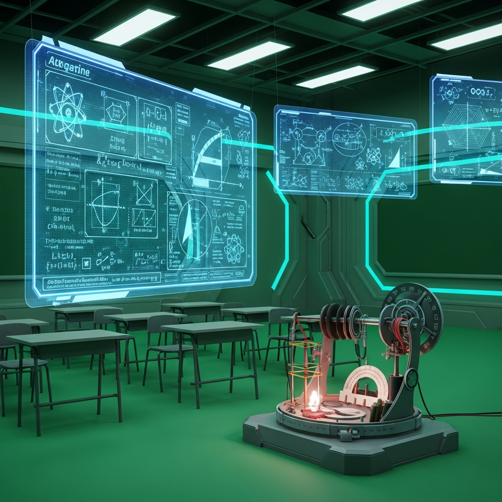
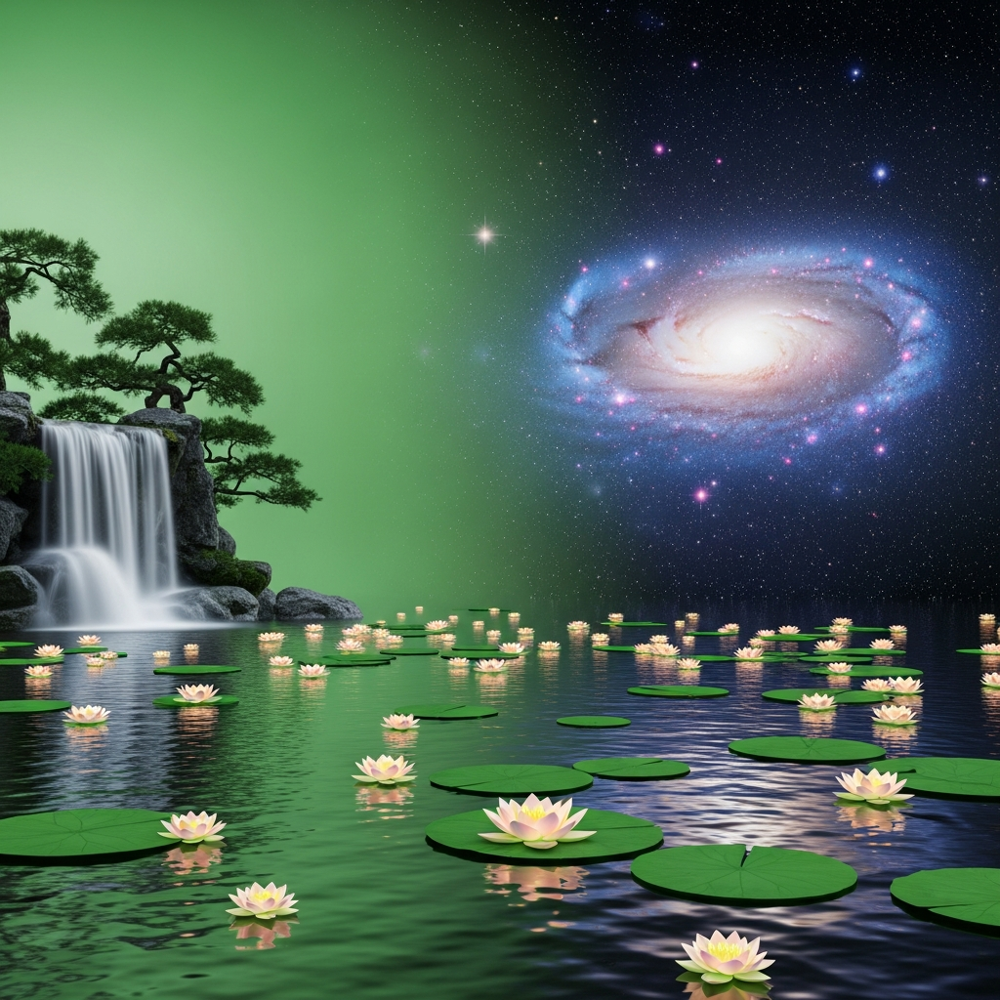
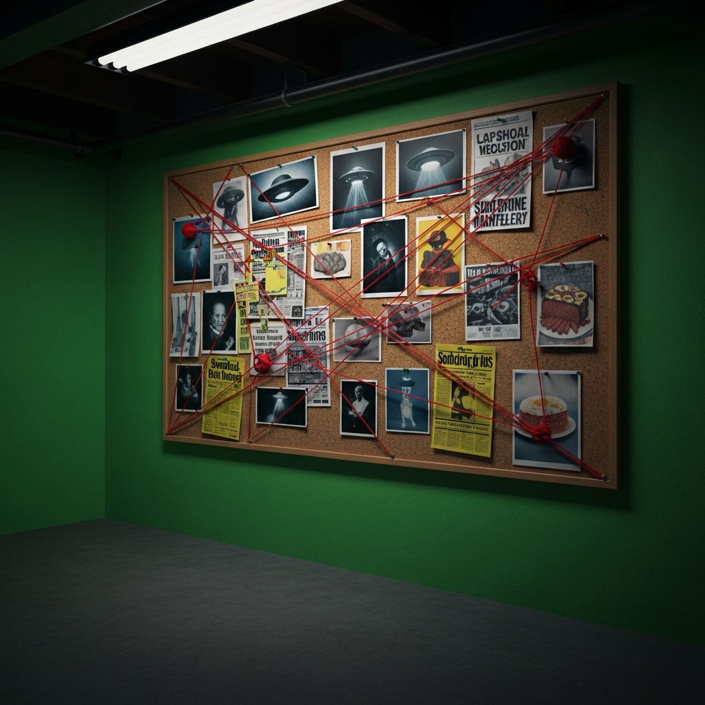
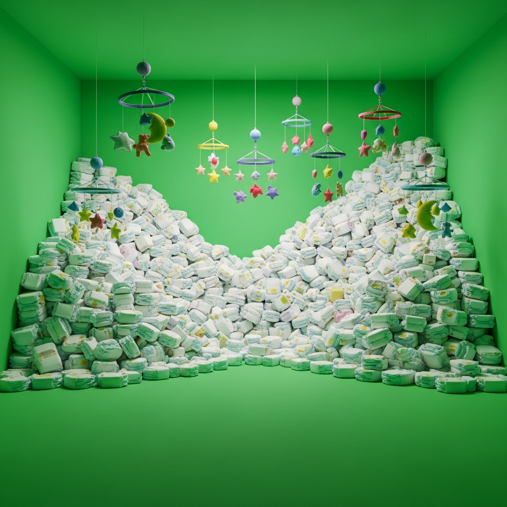
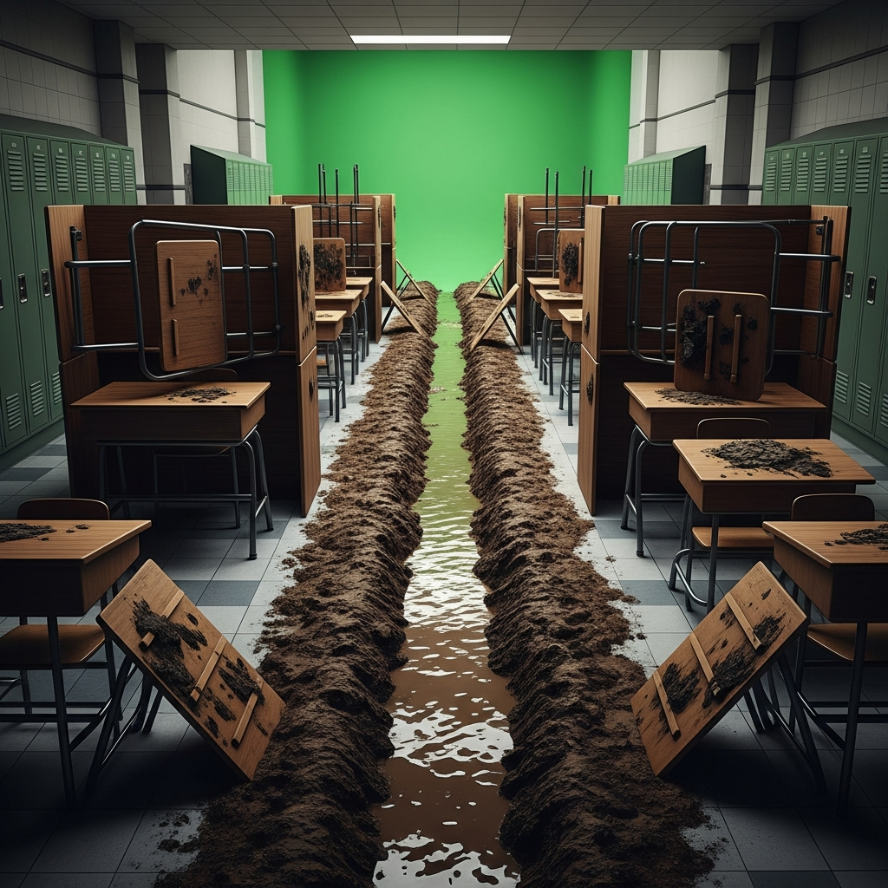

The ultimate Green Screen drama to introduce Future Continuous and Future Perfect tenses!
Welcome, time-travelers and grammar-lovers, to Future-Vision! I am your host, Sinan! By the end of today's show, your minds will have exploded with knowledge! Today, we are interviewing your very own teachers about their ultimate future plans. Let's start with Burcu!
Burcu's Background
(Frantic, wide-eyed, clutching a giant coffee cup) Thank you, Sinan! My plans are completely unhinged! By the time this school year ends, I will have graded ten thousand essays on what you did for summer vacation! The papercuts are everywhere!
Wow, that is intense! What else?
Next Monday at exactly 3:00 AM, I will be drinking my fourteenth cup of espresso and I will be crying softly under my desk!
Incredible dedication! Or perhaps a cry for help! Let’s move on to Halley. What does the future hold for your classroom?

Halley's Background
(Overly dramatic, overly musical, making grand hand gestures) Listen up, mortals! By the year 2045, I will have replaced all my human students with highly-efficient, silent holograms. They never ask to go to the bathroom!
Revolutionary! And what will you be doing while that happens?
While you guys are playing video games, I will be teaching Shakespeare telepathically to the entire galaxy! My mind is a wireless router!
I'm speechless. Let's hear from İlayda. Tell us, what are your visionary plans?
İlayda's Background
(Slouching, yawning loudly, holding a neck pillow) My plans are highly ambitious. By 3:15 PM today, I will have sprinted to my car and will have eaten all the leftover donuts in the teachers' lounge.
Inspiring stuff!
And tonight, while you are stressing over homework, I will be sleeping for forty-eight hours straight. I will not be answering emails. Wake me up in July.
Truly visionary! Moving gracefully along to Asiye. What is your cosmic destiny?

Asiye's Background
(Eyes closed, smiling peacefully, holding hands in a lotus pose) Namaste, Sinan. By the end of this cosmic cycle, I will have painted the entire school rainbow, and I will have achieved total enlightenment during detention.
So relaxing. And your immediate plans?
While you are stressing over exams, I will be meditating on the school roof and I will be weaving a giant friendship bracelet for the school bus. Breathe in, breathe out.
Beautiful. Finally, let's hear from Tarık. What secrets does the future hold?

Tarık's Background
(Paranoid, looking around suspiciously, whispering loudly) Shhh! The principal is listening. By the year 2030, I will have uncovered the truth about the cafeteria meatloaf, and I will have proved that aliens built the gymnasium!
I knew it! And until then?
Tomorrow at midnight, I will be crawling through the air vents, and I will be deciphering ancient codes in the library! Trust no one!
My lips are sealed! Speaking of secrets, let's hear from Gülbahar, who has a brand new secret of her own!

Gülbahar's Background
(Rocking an invisible baby, looking exhausted, swaying side to side) Shhh, keep your voices down! By my baby's first birthday, I will have changed ten thousand diapers, and I will have completely forgotten what sleep feels like!
You're doing great! Any plans for the weekend?
Oh yes. Saturday night, while you are out having fun, I will be pacing the hallways singing 'Baby Shark' for the 500th time, and I will be washing sticky baby bottles at 3 AM. It's so glamorous!
A true hero! Now, ATTENTION! Let's welcome Gary, who is counting down to retirement!

Gary's Background
(Blowing an imaginary whistle, standing extremely straight, barking orders) Listen up, cadets! By 1500 hours next Friday, I will have survived forty years of middle school dodgeball, and I will have confiscated my one-millionth paper airplane! Dismissed!
Sir, yes sir! What will you do with all your free time?
Next Monday morning, when the first bell rings, I will be fishing on a perfectly quiet lake, and I will be smashing my alarm clock with a heavy hammer! Do I make myself clear?!
Crystal clear! Finally, hit that subscribe button, because here comes Adenya!
Adenya's Background
(Holding up an imaginary phone on a selfie stick, posing constantly) Hey besties! Hashtag Teacher Life! By the end of this semester, my classroom dance channel will have reached one million subscribers, and I will have officially gone viral on TikTok! Smash that like button!
We're all following! What's your next content drop?
During tomorrow's math test, I will be live-streaming your panicked faces to the internet, and I will be doing a makeup tutorial at my desk! Hashtag Sorry Not Sorry!
Our lips are sealed! (Turns to the camera, pulling down their giant sunglasses) And what about YOU, students? In the next few weeks, you will be studying the secrets of time itself. By the time the unit test arrives, you will have mastered the Future Continuous and the Future Perfect tenses!
(Stepping into frame together, waving awkwardly as the green screen glitches behind them) See you in the future!